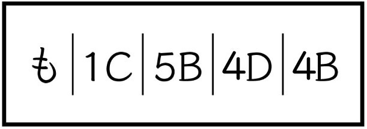
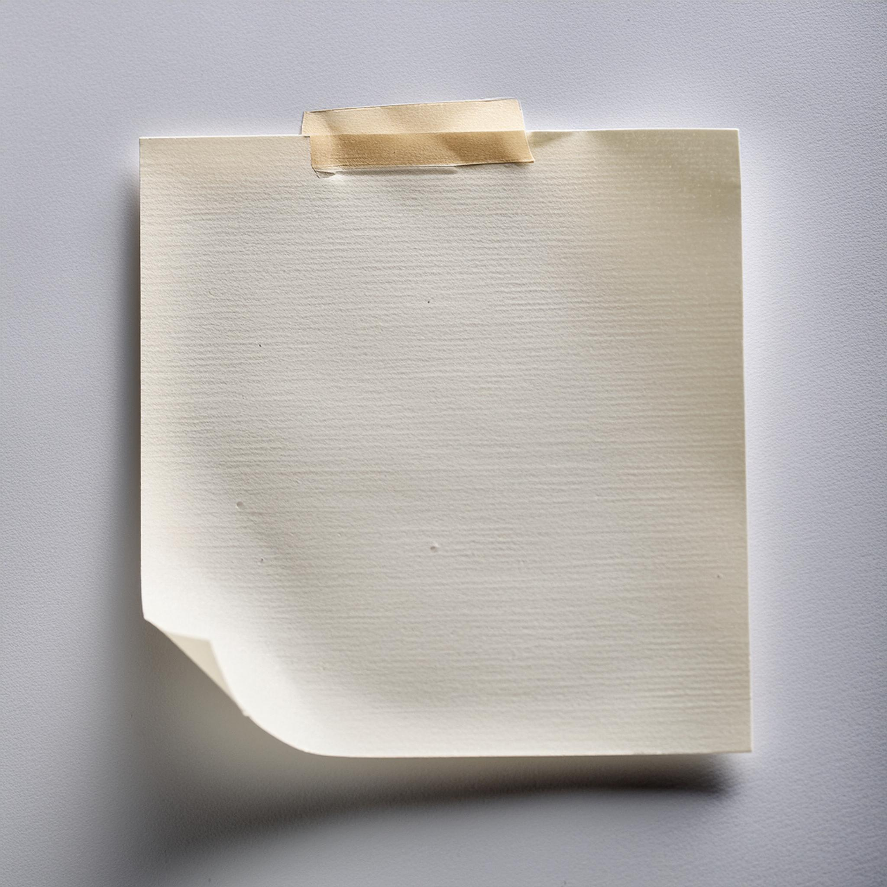
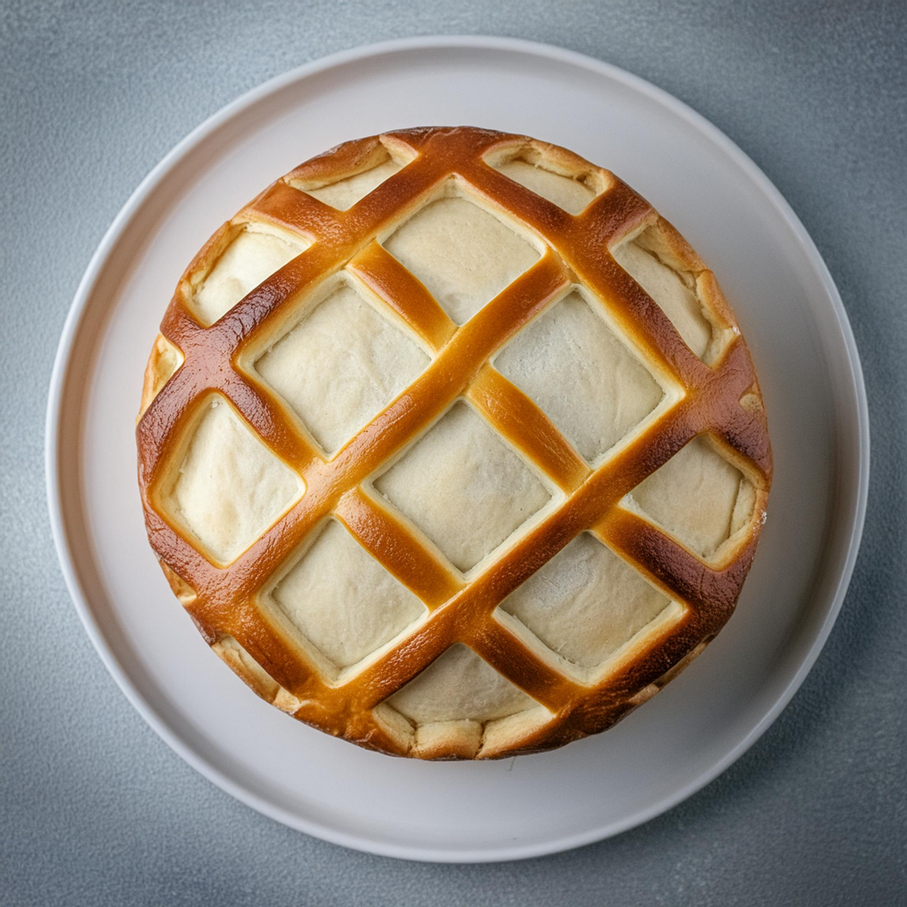
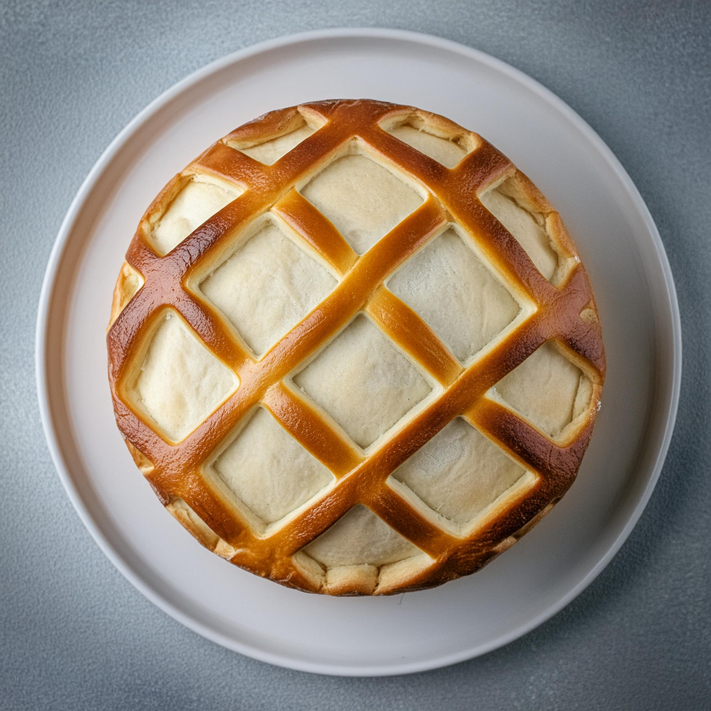

謎のメモ
問題

「インスタに載せとこう」とあるのは、「インスタ」にヒントがあることを示している。
手掛かり1

「謎のメモ」にある数字とアルファベットの組み合わせは、この表を使ったもの。



1枚目は「双葉」、2枚目は「アクセスマーク」、3枚目は「紙」、4枚目は「交差した線の模様の円（パイ）」、5枚目は「手紙」
また「＃suc」「＃静岡文化芸術大学」「＃ホームページ」「＃メニュー」の4つの「＃」は次のヒントを示している。
suac（静岡文化芸術大学）のホームページ


メニューをよく見てみると、インスタに載っている画像と似たようなアイコンがある。
それぞれ「寄付のお願い」「資料請求」「お問い合わせ」「アクセス」「Language」
答え
インスタの画像の順番に合わせてホームページのアイコンと照らし合わせると、「寄付のお願い」「アクセス」「資料請求」「Language」「お問い合わせ」の順番になる。これを手掛かり1の表にひらがなで順番通りに入れると、

問題の数字とアルファベットの組み合わせ通りに文字を読んでいくと、1C＝「の」、5B＝「と」、4D＝「ー」、4B＝「ん」となる。
くろーばーの問題の答えは「ものとーん」